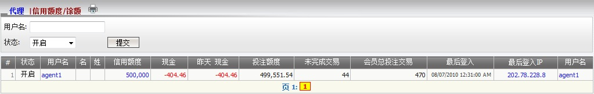
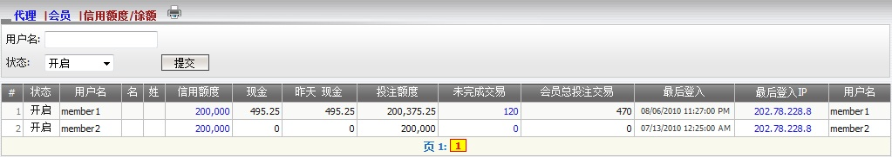

信用额度/余额
定义:
这个功能显示所有代理/会员的信用额度及余额的必要信息, 例如:
- 状态: 开启, 关闭, 暂停 或 禁用。
- 信用额度: 总代理给予的代理总信用额度。
- 现金: 截止现在的代理输赢总额包括转账数额。
- 昨日 现金: 截至昨日的代理输赢总额包括转账数额。
- 投注额度: 代理可给予他/她的会员的可用信用额度。
- 未完成交易: 代理的总收入数额从会员仍在进行中的注单。
- 会员总投注交易: 仍在进行中和已结算注单的总投注额。
此外, 系统也允许总代理点击信用额度数额以更新代理信用额度:

图 1.1
要查看所有关于会员信用额度及现金的相关信息, 点击代理用户名 (图1.2). 此外, 总代理也被允许:

图 1.2